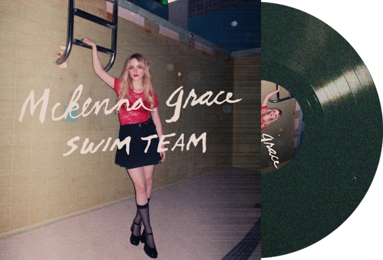
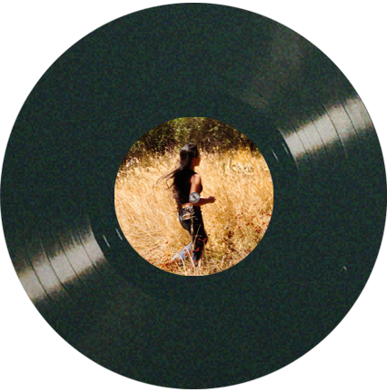
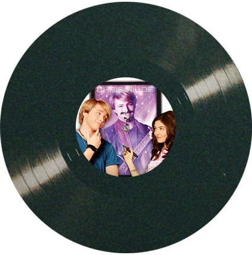
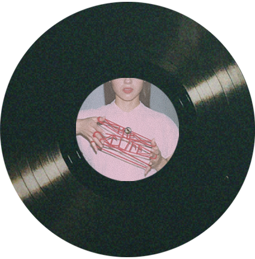

⋆ My Top 10 Songs! ⋆
| Song | Artist | Duration | Release Date |
|---|---|---|---|
| Swim Team | Mckenna Grace | 3:11 mins | August 2, 2024 |
| Tears in your eyes | MICO | 2:43 mins | Oct 25, 2024 |
| Senses | MICO | 2:39 mins | Sep 25, 2024 |
| 3am | ROSÉ | 2:34 mins | Dec 6, 2024 |
| everyone is anyone | Celina Fang | 4:48 mins | Apr 17, 2025 |
| the cure | Olivia Rodrigo | 4:57 mins | May 22, 2026 |
| Haunted House | Mckenna Grace | 3:12 mins | Nov 18, 2021 |
| TV | MICO | 2:52 mins | Oct 25, 2024 |
| Hero (Unplugged) | Christopher Wilde | 2:33 mins | Jan 1, 2010 |
| twin | JENNIE | 3:28 mins | Mar 7, 2025 |
For someone like me, choosing my top 10 songs is a difficult task! I often get into the routine of wanting to repeat certain songs for days before moving on to other songs. It just seems difficult to truly label a song my “favorite.” Lucky for me, Spotify creates a Spotify wrap at the end of every year telling me what my most listened to songs were! Obviously 2026 hasn’t ended quite yet, so there is no Spotify wrap out yet for 2026. When I took a look back at my 2025 Spotify wrap recently, I found that some of my top songs have definitely remained victims to my endless loops even in 2026! So, here I have a blend of songs from my 2025 Spotify wrap and songs that I personally think kept coming to mind throughout 2026!

☁︎ Top Of The Top ☁︎
I could easily give 90% of these songs the #1 spot for different reasons, but maybe my Spotify data is on to something. "Swim Team" is a song that touches on romantic insecurities and overthinking in a relationship where one party may not have as many romantic experiences as the other. I think she does a wonderful job at tackling this topic with her metaphors and the way the artist conveys the emotions in her voice simply scratches my brain in the best way!
⋆｡ ﾟ☾ Honorable Mentions ☽˚｡⋆

everyone is anyone By Celina Fang
This is a song I found myself playing on repeat and returning to all throughout 2026! The song is about struggling with a fragmented sense of self along with the isolation and loneliness that comes with feeling invisible. Personally, it's an easy song for me to resonate with in ways and in that I find comfort.
Hero (Unplugged) By Christopher Wilde
To me, this song is like a guilty pleasure and nostalgia wrapped up in one! The song comes from the Disney movie "Starstruck." There is an unexplainable comfort I get from listening to this song, but it's probably heavily fueled by nostalgia! It's a very feel-good, heartwarming love song where the artist sings about stepping up to be the hero for the person he loves even if he's just an ordinary guy. I think it's a nice, simple message about wanting to be there for your special person in any way you could.


the cure By Olivia Rodrigo
The newest released song on my list is “the cure.” The song goes over the realization that love and a relationship isn’t a magical cure to personal insecurities or personal flaws; No amount of love is enough to replace true internal healing and acceptance of one’s self. Whether or not I can resonate to the message of the song, I find that the artist has a way of getting the listener to truly feel her emotions and I find myself coming back to listen to it often.